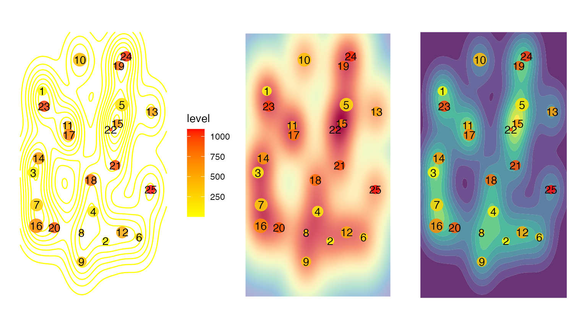

Overview
Overview.RmdEye-movement similarity analysis
The main goal of this eyesim is to provide tools for computing measures of similarity between eye-movement fixation data collected over a series of trials embedded in an experimental design. A major focus of the library is to offer eay ways to compare fixation patterns between two experimental states, for example, between perceiving an image and remembering that same image. These kinds of analyses are useful in assessing and quantifying so-called eye-movement reinstatement in studies of memory. Below we describe some basic aspects of the library that should allow one to get started with it.
A Basic unit: the Fixation Group
A fixation group is a set of eye-movement fixations that comprise a meaningful unit in a study, for example, a trial, a condition, a participants, a time window, etc. Every fixation group contains a set of xy coordinates and corresponding vectors indicating the onset (when did the fixation start?) and the duration (how long did the fixation last?) of the set of fixations. Below we create a fixation group from a set of 3 coordinates occurring at at times 0, 10, and 60.
After creating a fixation_group object, we then plot it to visualize the location of the three fixations. The size of each point is scaled by duration and the color of each point is mapped to the onset time, with yellow colors being early-courring and red colors being late-occurring in this group.
library(eyesim) #> Warning: replacing previous import 'magrittr::set_names' by 'rlang::set_names' #> when loading 'eyesim' library(patchwork) fg <- fixation_group(x=c(-100, 0, 100), y=c(0, 100, 0), onset=c(0,10,60), duration=c(10,50,100)) plot(fg)

Now we create larger group consisting of 25 randomly generated eye-movements.
library(eyesim) cds <- do.call(rbind, lapply(1:25, function(i) { data.frame(x=runif(1)*100, y=runif(1)*100) })) onset <- cumsum(runif(25)*100) fg <- fixation_group(x=cds[,1], y=cds[,2], onset=onset, duration=c(diff(onset),25)) plot(fg)

That’s a pretty busy display, but captures the sequence of eye-movements. We can also plot various kinds of “density” maps which simply where the fixations were most likely to occur.
Below we show three different ways of plotting fixation density: a contour plot, a raster plot, and a filled contour plot.
p1 <- plot(fg, typ="contour", xlim=c(-10,110), ylim=c(-10,110), bandwidth=35) p2 <- plot(fg, typ="raster", xlim=c(-10,110), ylim=c(-10,110), bandwidth=35) p3 <- plot(fg, typ="filled_contour", xlim=c(-10,110), ylim=c(-10,110), bandwidth=35) p1+p2+p3 #> Warning: Removed 396 rows containing missing values (geom_raster).

We can also vary the bandwidth of the two-diemnsional density estimation procedure to visualize the fixations at different levels of smoothness.
p1 <- plot(fg, typ="filled_contour", xlim=c(-10,110), ylim=c(-10,110), bandwidth=20) p2 <- plot(fg, typ="filled_contour", xlim=c(-10,110), ylim=c(-10,110), bandwidth=60) p3 <- plot(fg, typ="filled_contour", xlim=c(-10,110), ylim=c(-10,110), bandwidth=100) p1+p2+p3

Computing similarity between Fixation Groups
Suppose we have to fixation groups, fg1 and fg2, how do we compare these coordinate sets? Currently, eyesim provides methods for computing similarities between spatial density maps. In the future, other approaches will be added that incorporate temporal information. Below, we generate two eye-movement patterns, one of which is a perturbed version of the other. Then we compute a series of simialrity metrics on the two patterns.
cds <- do.call(rbind, lapply(1:25, function(i) { data.frame(x=runif(1)*100, y=runif(1)*100) })) cds2 <- do.call(rbind, lapply(1:25, function(i) { if (i %% 2 == 0) { data.frame(x=runif(1)*100, y=runif(1)*100) } else { data.frame(x=cds[i,1], y=cds[i,2]) } })) onset <- cumsum(runif(25)*100) fg1 <- fixation_group(x=cds[,1], y=cds[,2], onset=onset, duration=c(diff(onset),25)) fg2 <- fixation_group(x=cds2[,1], y=cds2[,2], onset=onset, duration=c(diff(onset),25)) p1 <- plot(fg1) p2 <- plot(fg2) p1+p2

To compute the similarity between any two fixation_groups we use the similarity generic function. First we convert the fixation_groups into eye_density objects and then compute their similarity. The default metric for comparing two density maps is the Pearson correlation coefficient.
ed1 <- eye_density(fg1, sigma=50, xbounds=c(0,100), ybounds=c(0,100)) ed2 <- eye_density(fg2, sigma=50, xbounds=c(0,100), ybounds=c(0,100)) s1 <- similarity(ed1,ed2) s1 #> [1] 0.4245747
We can compute other similarity measures as well:
methods=c("pearson", "spearman", "fisherz", "cosine", "l1", "jaccard", "dcov") for (meth in methods) { s1 <- similarity(ed1,ed2, method=meth) print(paste(meth, ":", s1)) } #> [1] "pearson : 0.42457467574192" #> [1] "spearman : 0.393887627849148" #> [1] "fisherz : 0.45325955663351" #> [1] "cosine : 0.885573731008126" #> [1] "l1 : 0.573534811975141" #> [1] "jaccard : 0.793882992062983" #> [1] "dcov : 0.385780714745455"